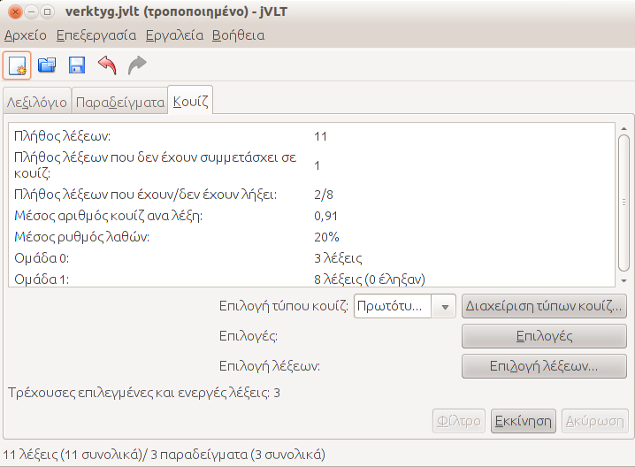
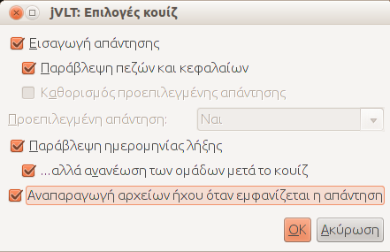

jVLT - Ένα εργαλέιο εκμάθησης λεξιλογίου
Κουίζ
- Ομάδα 0: 0 ημέρες
- Ομάδα 1: 1 ημέρες
- Ομάδα 2: 3 ημέρες
- Ομάδα 3: 9 ημέρες
- Ομάδα 4: 27 ημέρες
- Ομάδα 5: 81 ημέρες
- Ομάδα 6: 283 ημέρες
- Ομάδα 7: 849 ημέρες

Πριν το κουίζ
Πριν ξεκινήσεις ένα κουίζ μπορείς να επιλέξεις τον τύπο του, να καθορίσεις ορισμένες επιλογές και να περιορίσεις το σύνολο των λέξεων που θα εμφανιστούν στο κουίζ.Επιλογή Λέξεων
Αφού πατήσεις το κουμπί "Επιλογή Λέξεων..." ένα παράθυρο διαλόγου θα εμφανιστεί, που σου επιτρέπει να επιλέξεις λέξεις χρησιμοποιώντας μία από τις 4 διαφορετικές μεθόδους.- Όλες οι λέξεις: Όλες οι λέξεις θα βρίσκονται μέσα στο κουίζ.
- Μόνο λέξεις που περνάν το φίλτρο Μόνο λέξεις που ικανοποιούν τα κριτήρια ενός φίλτρου θα υπάρχουν μέσα στο κουίζ. Εάν επιλέξεις αυτή την εναλλακτική, πρέπει να καθορίσεις ένα φίλτρο χρησιμοποιώντας το κουμπί "Φίλτρο". Η διαδικασία που ακολουθεί μετά περιγράφεται εδώ.
- Εφαρμογή πολλαπλών φίλτρων διαδοχικά Μπορείς επίσης να επιλέξεις περισσότερα φίλτρα που θα εφαρμοστούν διαδοχικά. Παραδείγματος χάριν μπορείς να ορίσεις ότι όλες οι λέξεις που δεν έχουν εξεταστεί προηγουμένως θα βρίσκονται μέσα στο κουίζ, και μετά θα προστεθούν λέξεις κάποιου μαθήματος. Μπορείς να προσθέσεις νέα φίλτρα χρησιμοποιώντας το κουμπί "Διαχείριση Φίλτρων.."
- Μόνο λέξεις που ικανοποιούν τα παρακάτω κριτήρια Επίλεξε αυτή την εναλλακτική εάν θέλεις να επιλέξεις γρήγορα τα μαθήματα ή τις κατηγορίες που θέλεις ή δεν θέλεις να βρίσκονται μέσα στο κουίζ.
Επιλογή τύπου κουίζ
Το jVLT εκτελεί κουίζ πάνω στο πεδίο "Πρωτότυπο" από προεπιλογή. Μπορείς να σχεδιάσεις πολλούς άλλους τύπους κουίζ χρησιμοποιώντας το παράθυρο διαλόγου που εμφανίζεται αφού πατήσεις το κουμπί "Διαχείριση τύπου κουίζ.."Στο παράθυρο διαλόγου επιλέγεις το πεδίο πάνω στο οποίο θα γίνει το κουίζ, και τα πεδία που θα εμφανίζονται κατά το κουίζ. Πρέπει να ονομάσεις τον τύπο κουίζ που δημιούργησες γράφοντας το όνομα στη φόρμα που βρίσκεται στην κορυφή του παραθύρου διαλόγου και μετά να πατήσεις "Νέο/Ενημέρωση". Χρησιμοποιώντας το ίδιο κουμπί μπορείς να αλλάξεις υπάρχοντες τύπους κουίζ επιλέγοντας τους πρώτα από το αναδιπλούμενο μενού. Αφού γίνουν οι επιθυμητές αλλαγές πρέπει να πατήσεις "Νέο/Ενημέρωση".
Αφού προσθέσεις ένα νέο τύπο κουίζ και κλείσεις το παράθυρο διαλόγου πατώντας "OK", μπορείς να επιλέξεις τον νέο τύπο κουίζ μέσω του αναδιπλούμενου μενού "Επιλογή τύπου κουίζ".
Επιλογές Κουίζ
Στο παράθυρο διαλόγου επιλογών κουίζ μπορείς να επιλέξεις μεταξύ διάφορων εναλλακτικών που καθορίζουν το πως θα εκτελεστεί το κουίζ.

- Εισαγωγή απάντησης: Κάνοντας αυτή την επιλογή, δηλώνεις το αν θέλεις να εισάγεις την λύση κατά τη διάρκεια ενός κουίζ.
- Παράβλεψη πεζών/κεφαλαίων: Κάνοντας αυτή την επιλογή, δηλώνεις το αν θέλεις η απάντηση σου να ελέγχεται ως προς τα κεφαλαία/μικρά. Εάν το checkbox είναι επιλεγμένο, η απάντηση "ελλάδα" για τη λέξη "Ελλάδα" θα θεωρηθεί σωστή.
- Προεπιλεγμένη απάντηση: Εάν το checkbox είναι επιλεγμένο, μπορείς να θέσεις μία προεπιλεγμένη απάντηση ("Ναι" ή "Όχι") για κάθε λέξη σε ένα κουίζ.
- Παράβλεψη της ημερομηνίας λήξης: Κάνοντας αυτή την επιλογή, η ημερομηνία λήξης των λέξεων θα αγνοείται κατά τη διάρκεια ενός κουίζ. Έτσι μπορείς να ερωτηθείς αμέσως πάνω σε λέξεις που έχεις ερωτηθεί πρόσφατα.
- ...αλλά ανανέωση των ομάδων μετά το κουίζ Εάν το checkbox είναι επιλεγμένο, οι ομάδες των λέξεων ανανεώνονται μετά το κουίζ ακόμη και αν η ημερομηνία λήξης της λέξης παραβλέπεται.
Κατά τη διάρκεια του κουίζ
Ανάλογα με τις ρυθμίσεις που έκανες για το κουίζ, η εκτέλεσή του μπορεί να γίνει με δύο τρόπους. Η πρώτη εναλλακτική είναι να εισάγεις την λύση, όπως φαίνεται στην παρακάτω εικόνα:Αφού πατήσεις "Επόμενο", η λύση εμφανίζεται, και ένα μήνυμα σε ενημερώνει για το αν η απάντησή σου ήταν σωστή ή όχι.
Η δεύτερη εναλλακτική είναι να μην εισάγεις την λύση. Σε αυτή την περίπτωση το jVLT σε ρωτάει -αφού πατήσεις "Επόμενο" - αν ήξερες τη σωστή απάντηση.
Είναι επίσης εφικτό να θέσεις τις σημαίες που περιγράφονται στο παράθυρο διαλόγου προχωρημένες ρυθμίσεις κατά τη διάρκεια ενός κουίζ. Εάν τεθεί μια σημαία η λέξη αποκλείεται από τα επόμενα κουίζ.
Μπορείς να ακυρώσεις ένα κουίζ οποιαδήποτε τιμή πατώντας "Τερματισμός". Στην επόμενη ενότητα περιγράφεται το τι συμβαίνει στη συνέχεια.